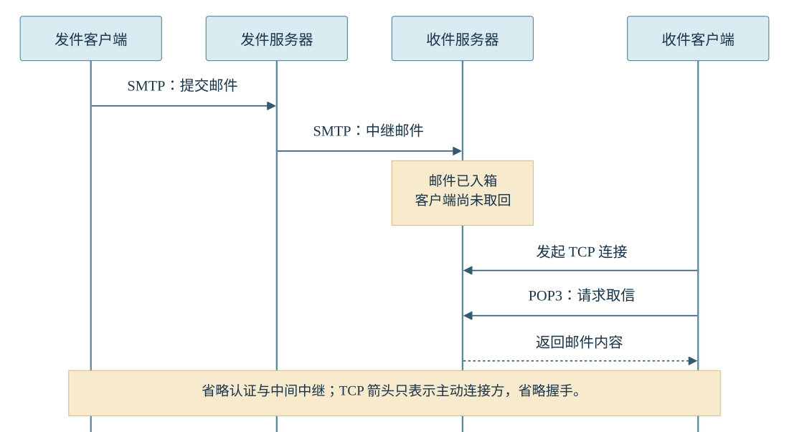

在写信软件里打下“明天一起去看海吧！”，点击发送。
这时，收件人的平板或许还没联网。那封橙色信封会在哪里等他？等他开机联网，又是谁主动去找谁，把信拿回来？
邮件可以先抵达收件服务器，等客户端晚些再来取。沿着这两段路走一遍，SMTP 和 POP3 的分工就有了具体的位置。
送信的路上，一台服务器有两种角色
点下发送，信件还不能直接跳进对方的平板。日常的发信路径中，邮件客户端通常先把信交给配置好的发件服务器，后面的递送由服务器接力完成。
第一幅画里，鲸鱼娘带着信封经过两次交接：从发件客户端交给蓝色服务器，叫提交（Submission）；蓝色服务器再交给青色服务器，叫中继（Relay）。这两段都用 SMTP（Simple Mail Transfer Protocol，简单邮件传输协议）。
最后一格，平板还挂着睡脸，信封已经停在青色服务器的邮箱里。电子邮件采用“存储—转发”机制，服务器能暂存邮件，收发双方的客户端不必同时在线。这一格画的是投递成功后的等待。
再把目光挪回蓝色服务器。客户端向它提交邮件时，它等待连接、接收内容，是服务端；轮到它把信交给青色服务器时，它得主动联系对方，又成了这条连接中的客户端。角色要看“哪一次连接”，不能只看设备叫不叫服务器。
换成跨域投递，假设收件地址是 friend@example.net，蓝色服务器怎么知道该找谁？它通常向 DNS 查询 @ 后面 example.net 的 MX（Mail Exchanger，邮件交换）记录，找到负责该域邮件的主机，再解析这台主机的 IP 地址。它要找的是收件服务器，不必查出那台平板正连着哪家咖啡馆的 Wi-Fi；整串邮箱地址也不会被 DNS 直接解析成一个 IP。
TCP 已经连通了，为什么还要 SMTP？
把信送进网络，既用了 TCP，又用了 SMTP。它们各忙什么？Ani 在黑板上圈出了邮件协议的位置。
OSI 是 Open Systems Interconnection（开放系统互连）参考模型。SMTP、POP3 与 HTTP、FTP、DNS 一样，归在应用层；TCP 在传输层。实际 Internet 协议按 TCP/IP 体系组织，这里借七层图分清职责，不要求两套模型逐层对应。
TCP 提供可靠、有序的字节流传输：数据乱了序，可以按序号整理；数据丢失，可以依靠确认与重传恢复。网络持续故障时，连接仍会失败。即使字节已经传过去，TCP 也读不懂“请把这封邀请交给某个邮箱”这件事。
所以还需要 SMTP 约定业务上的对话：谁发信、交给谁、开始传邮件内容；对方用应答说明接受还是拒绝。TCP 连接成功，只说明通道建起来了；SMTP 的交接结果，还要继续看。例如，服务器接受了收件地址，后续传邮件内容仍可能失败。即便这一跳收下了整封邮件，后面还可能有中继，也不能直接推断收件人已经读到。
信向右走，请求却向左走
橙色信封在青色服务器里等候。收件人终于打开平板、连上网络，信还需要再走一段。
第二幅漫画把收件服务器放在左边，平板放在右边。两者之间出现了相反的箭头。先别只追着信封看，找找是谁先开口的。
这一段采用 POP3（Post Office Protocol version 3，邮局协议第 3 版）。平板先主动发起 TCP 连接，连上收件服务器；完成身份认证后，客户端发出 RETR 等取信命令。服务器收到请求，沿着已经建好的连接把邮件交回来。
朝右的橙色信封告诉你“邮件往哪走”；朝左的蓝色箭头告诉你“谁主动来取”。服务器正在返回邮件，并不能推出服务器主动建立了连接。这也是做题时要先认清箭头含义的原因。
邮件下载下来，服务器上的那封信会立刻消失吗？POP3 把取内容和删除分成了不同操作：RETR 取内容，DELE 加删除标记。在 TRANSACTION（事务）状态下，客户端发送 QUIT，服务器接收后才进入 UPDATE（更新）阶段，处理这些标记。
假设客户端刚发过 DELE，还没进入更新阶段就意外掉线，本次不会执行这些删除。于是，“取回了”“标记了”“执行删除了”要分开看。软件里“保留服务器副本”的选项，也得落实到实际发送的命令；细节可展开删除规则。
再夹一张海景照片，顺便换到手机上读
回到写信时。我们在“明天一起去看海吧！”后面附上一张 sea.jpg。附件明明是文件，这封信会改走 FTP 吗？
照片会由 MIME（Multipurpose Internet Mail Extensions，多用途 Internet 邮件扩展）组织进邮件：标明内容类型、划分正文与附件，并按内容需要采用传输编码，例如 Base64。编码本身不提供保密。整封邮件带上照片，前面的提交和中继仍然用 SMTP。
现在收件人先在手机上读完邀请，顺手把信移到“旅行计划”文件夹。晚些打开平板，他希望这封信也显示已读、待在同一个文件夹里。仅靠 POP3 取回内容的这些操作，还不能同步这套邮箱状态。
这时可以使用 IMAP（Internet Message Access Protocol）。它在服务器端管理邮箱文件夹与已读、未读等状态，多台设备据此同步；需要阅读时，也能获取、下载邮件内容。图里手机和平板都联系同一个服务器，状态通过服务器协调。
POP3 和 IMAP 是可选的邮箱访问方案，不必先用 POP3，再用 IMAP。题目若强调多端已读状态、文件夹管理，就把注意力放在 IMAP；强调附件的格式与编码，联系 MIME。一个在管邮箱，一个在组织邮件内容，名字都出现在邮件题里，职责却有明确边界。
平板醒来以后，信才走完最后一段
把前面送信与取信的两幅漫画接到同一条时间线上。这里仍选 POP3 作为最后一段的访问方式：

漫画与时序图省略 TCP 握手、POP3 问候与认证，以及中间 MTA；重点看连接发起方与邮件流向。
做题看到“接收邮件”，先看看谁在接收。邮件服务器从发件客户端或上一台服务器收信，分别属于提交或中继，用的仍是 SMTP；本例中的收件客户端访问邮箱，可采用 POP3 或 IMAP；若通过网页邮箱访问，还要认清浏览器面对的 HTTP/HTTPS 接口。只盯着一个“收”字，容易把路径选错。
看到箭头，再认它画的是连接请求还是邮件内容。POP3 里客户端主动请求，服务器返回内容，两件事方向相反，却发生在同一条连接上。
端口题也要读限定条件：常见默认口径先记 SMTP 25、POP3 110、IMAP 143；涉及提交或 TLS，再翻端口速查。
回到那句“明天一起去看海吧！”。第一幅画结束时，邀请停在收件服务器；第二幅画结束时，它被取回平板。至于收件人什么时候划开屏幕、读到邀请，还得另看。现在可以遮住图，试着回答自测里的“谁先发起连接”。